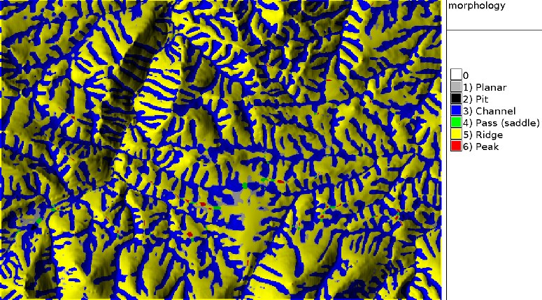

DESCRIPTION
r.param.scale extracts terrain parameters from a digital elevation model. Uses a
multi-scale approach by fitting a bivariate quadratic polynomial to a given
window size using least squares.
The module calculates the following parameters (terminology is from Wood,
1996 with related terminology used in other GRASS modules listed in
brackets):
-
elev: Generalised elevation value (for resampling purposes at different
scale)
-
slope: Magnitude of maximum gradient (steepest slope angle)
-
aspect: Direction of maximum gradient (steepest slope direction=flow direction)
-
profc: profile curvature (curvature intersecting with the plane
defined by Z axis and maximum gradient direction). Positive values
describe convex profile curvature, negative values concave profile
curvature.
-
planc: plan curvature (horizontal curvature, intersecting with
the XY plane)
-
longc: longitudinal curvature (profile curvature intersecting
with the plane defined by the surface normal and maximum gradient direction)
-
crosc: cross-sectional curvature (tangential curvature intersecting
with the plane defined by the surface normal and a tangent to the contour
- perpendicular to maximum gradient direction)
-
maxic: maximum curvature (can be in any direction)
-
minic: minimum curvature (in direction perpendicular to the direction
of of maximum curvature)
-
feature: Morphometric features: peaks, ridges, passes, channels, pits and planes
NOTES
In r.param.scale the direction of maximum gradient (considered
downslope) is stored as (West is 0 degree, East is +/- 180 degree):
-
0..+180 degree from West to North to East
-
0..-180 degree from West to South to East
Note that the aspect map is calculated differently from
r.slope.aspect.
EXAMPLE
The next commands will create a geomorphological map of the Spearfish sample
dataset region:
g.region raster=elevation.10m -p
r.param.scale in=elevation.10m output=morphology method=feature size=9

Figure: Geomorphological map of a subregion in the Spearfish (SD) area
TODO
Fix bug when `constrain through central cell' option selected. Create color
tables for all output files (presently only on features).
REFERENCES
- Wood, J. (1996): The Geomorphological characterisation of
Digital Elevation Models. Diss., Department of Geography, University
of Leicester, U.K
online at:
http://hdl.handle.net/2381/34503
- Java Code in
LandSerf
that implements the same procedure
SEE ALSO
r.geomorphon,
r.slope.aspect
AUTHORS
jwo@le.ac.uk
- ASSIST's home
Update to FP 3/2002: L. Potrich, M. Neteler, S. Menegon (ITC-irst)
{kind=link}